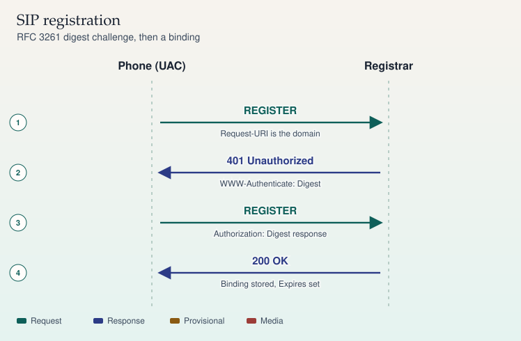

SIP · RFC 3261
Registration
A phone registers to publish where it is. The registrar stores a binding from an address-of-record to a Contact URI. Registration is not a phone call, and it does not by itself reserve media.

On a phone, swipe a wide ladder sideways. The steps below repeat the same sequence.
Sequence
- REGISTER — Phone (UAC) to Registrar. Request-URI is the domain
- 401 Unauthorized — Registrar to Phone (UAC). WWW-Authenticate: Digest
- REGISTER — Phone (UAC) to Registrar. Authorization: Digest response
- 200 OK — Registrar to Phone (UAC). Binding stored, Expires set
What the messages mean
The Request-URI of a REGISTER is the registrar's domain, such as sip:example.com. The To header is the address-of-record being registered, such as sip:alice@example.com. The Contact is the device URI the registrar should use later, such as sip:alice@192.0.2.10:5060. From and To are often the same on a REGISTER. They are not the same idea.
The first REGISTER usually has no credentials. The registrar answers 401 Unauthorized with WWW-Authenticate containing the digest realm and nonce. The phone answers with a second REGISTER that carries Authorization. A 200 OK lists the bindings the registrar stored and the Expires value that applies.
A proxy in front of the registrar is a different challenge. A proxy uses 407 Proxy Authentication Required and Proxy-Authenticate / Proxy-Authorization. Do not treat 401 and 407 as interchangeable.
Bindings
Expires: 0on a Contact removes that binding.Contact: *withExpires: 0removes all bindings for the address-of-record (RFC 3261).- The Call-ID and CSeq still identify the REGISTER transaction. CSeq increases when the phone retries after 401.
- If the phone is behind NAT, the Contact it writes may be an address the registrar cannot reach. The reachable address is a separate problem from the digest challenge.
Sources
- RFC 3261, section 10 (registrations) and section 22 (digest authentication)
- Example addresses: sip:alice@example.com, 192.0.2.10